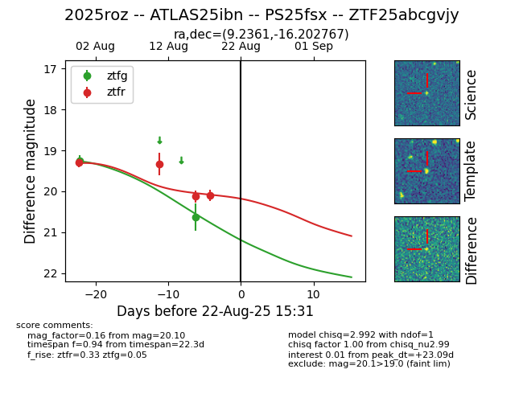

Target 2025roz at 2025-08-22 16:16, see:
FINK: fink-portal.org/ZTF25abcgvjy
Lasair: lasair-ztf.lsst.ac.uk/objects/ZTF25abcgvjy
ALeRCE: alerce.online/object/ZTF25abcgvjy
TNS: wis-tns.org/object/2025roz
YSE: ziggy.ucolick.org/yse/transient_detail/2025roz
alt names
ZTF25abcgvjy (ztf,alerce)
2025roz (tns,yse)
ATLAS25ibn (atlas)
PS25fsx (panstarrs)
coordinates:
equatorial (ra, dec) = (9.2361,-16.20277)
galactic (l, b) = (105.1000,-78.56959)
photometry
last atlaso=20.17, ztfg=20.63, ztfr=20.10
3 atlaso, 2 ztfg, 4 ztfr detections
